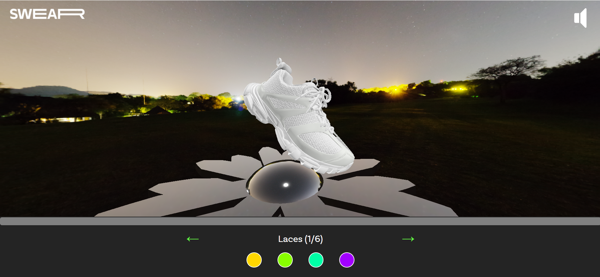
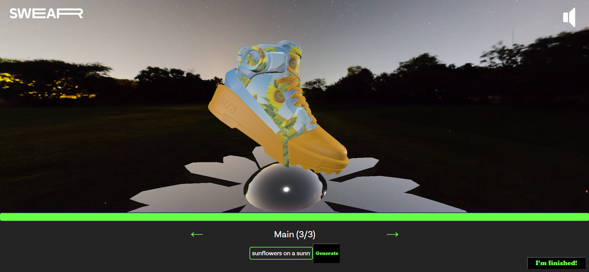
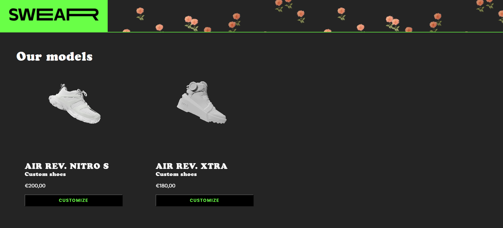

Welkom sneakerfanaten en technologieliefhebbers! In deze blogpost neem ik je mee op een opwindende reis door het recente Three.js project dat ik heb ontwikkeld: een innovatieve sneaker-configurator die je de vrijheid geeft om je eigen unieke stijl te creëren, vergelijkbaar met de befaamde Nike ID-configurator. Lees verder en ontdek hoe deze tool tot stand kwam en wat het zo speciaal maakt.
Stel je voor dat je de mogelijkheid hebt om je sneakers tot in het kleinste detail aan te passen, van de kleur van de veters tot het patroon op de zool. Mijn sneaker-configurator, gebouwd met behulp van het krachtige Three.js-framework, maakt dit mogelijk. Een waar paradijs voor sneakerliefhebbers en een meesterwerk in digitale creatie.
Three.js, een op JavaScript gebaseerde 3D-bibliotheek, stelt ons in staat om realistische en interactieve 3D-modellen van sneakers te creëren. De vloeiende bewegingen en haarscherpe details tillen de gebruikerservaring naar een hoger niveau, waardoor het ontwerpproces een waar genot wordt.
Deze sneaker-configurator is ontworpen met de gebruiker in gedachten. Een intuïtieve interface begeleidt je door het aanpassingsproces, waardoor zelfs de meest technisch onervaren persoon moeiteloos zijn of haar droomschoen kan samenstellen. In de video hieronder zie je welke onderdelen je kunt personaliseren bij het eerste model, namelijk:
Maar dat is nog niet alles! Wat mijn project echt onderscheidt, is de integratie van een AI image generator. Hiermee kun je niet alleen de kleuren en patronen van de sneaker aanpassen, maar ook unieke grafische elementen toevoegen die zijn gegenereerd door kunstmatige intelligentie.
Stel je voor dat je niet langer beperkt bent tot de keuzes in de winkelrekken, maar in plaats daarvan de regisseur wordt van het ontwerpproces. Een paar sneakers die echt uniek zijn en perfect passen bij jouw stijl en persoonlijkheid. Met mijn sneaker-configurator wordt dit verlangen werkelijkheid.
Bezoek de website en ontdek de grenzeloze mogelijkheden van gepersonaliseerd schoenontwerp met de samensmelting van Three.js en AI image generation. Jouw unieke paar wacht op je, klaar om de wereld te laten zien wie jij bent.
Met behulp van Three.js heb ik niet alleen een sneaker-configurator gecreëerd, maar een platform waarop individuele expressie en creativiteit worden omarmd. Het is niet zomaar een paar schoenen; het is een kunstwerk dat je zelf hebt vormgegeven. Bezoek de website, ontdek de mogelijkheden en laat je verbeelding de vrije loop. De toekomst van schoenontwerp begint hier!